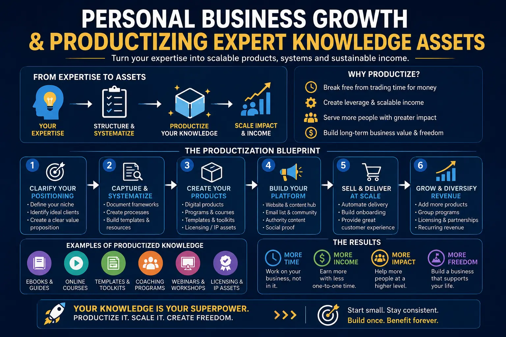
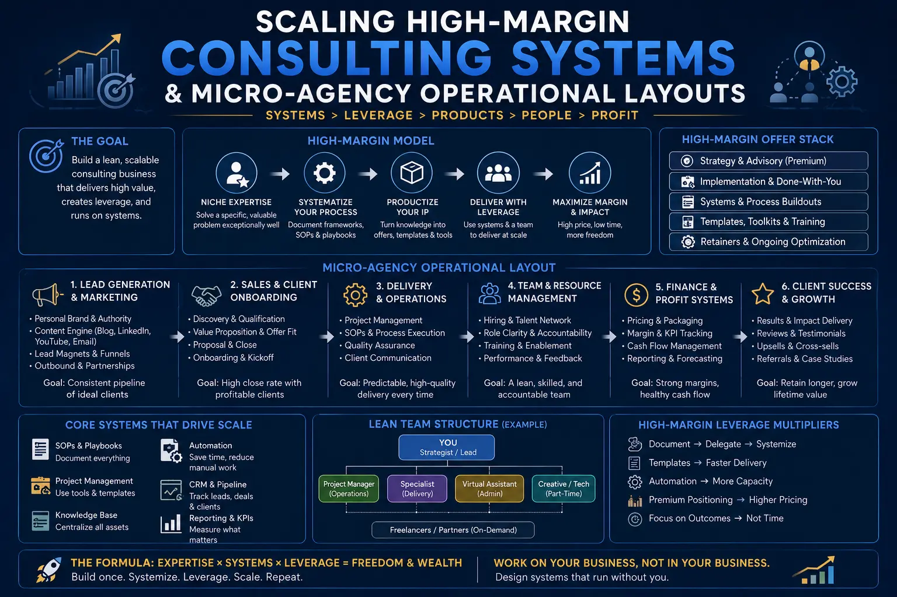

Building a Personal Business Growth Blueprint That Cuts Out billable Hour Delivery
The Hidden Trap of Trading Hours for Revenue
The billable hour is the ultimate constraint for the modern high-level expert. For years, consulting partners, independent advisors, and creative strategists have pursued self-employment under the promise of career autonomy, only to find themselves trapped in a high-stress cycle of trading time for money. While this traditional service model can sustain a comfortable lifestyle, it places an absolute ceiling on your earnings and limits your potential for true Personal Business Growth. When your revenue is tied directly to your physical presence and daily output, your business is not a scalable asset—it is simply a job that you own. If you get sick, take a vacation, or want to step back, the business stops operating. Scaling under this setup is nearly impossible because every new client requires more of your limited personal time, leading to eventual burnout. The pressure to bill more hours leaves little room for strategic planning, and founders find themselves working late nights just to keep up with delivery demands, defeating the purpose of running their own business in the first place.
To break free from this limitation, solo founders must shift their perspective from manual execution to strategic systems architecture. This requires a deliberate effort in productizing expert knowledge assets, which involves taking your years of experience, unique methodologies, and successful client outcomes, and converting them into structured, repeatable service products. Instead of selling open-ended consulting services charged by the hour, you package your expertise into a standardized solution with a fixed scope, clear deliverables, and a set price. This approach immediately shifts the client’s perception of your value from the hours you work to the outcomes you deliver, allowing you to charge premium prices and serve multiple clients simultaneously without increasing your workload. The core of sustainable Personal Business Growth is shifting your delivery model from customized manual labor to repeatable, productized solutions. Furthermore, by packaging your methodology into a tangible asset, you create a product that can be marketed, sold, and delivered by team members or automated platforms, paving the way for long-term scalability.
By establishing and Scaling High-Margin Consulting Systems, you replace custom project execution with a highly optimized, repeatable delivery framework. These systems utilize client onboarding portals, standard operating procedures, templates, and pre-recorded training modules to guide clients through your proprietary process. Because the delivery path is structured and predictable, the cognitive load on the founder is reduced dramatically. Clients receive a consistent, high-quality experience, while you free up valuable hours that can be reinvested in strategic growth. This level of systemization is the cornerstone of sustainable scaling, ensuring that your profit margins remain high as your client base expands. In fact, scaling consulting systems allows you to transition from high-stress custom deliveries to high-margin leveraged advisory roles, where you oversee the system rather than executing the micro-tasks yourself.
Building a scalable business does not mean you have to build a large, complex organization with high overhead. The modern approach is to design and implement Micro-Agency Operational Layouts. A micro-agency is a lean, highly efficient business model that utilizes automation, smart systems, and a small network of specialized contractors to deliver exceptional results. Instead of hiring full-time employees, which increases operational friction and management time, the solo founder acts as the primary strategist and systems architect. Administrative tasks, scheduling, and project management are automated, while technical execution is delegated to vetted external partners. This layout keeps overhead extremely low, resulting in a highly profitable and agile business that is easy to manage. By structuring your firm around these micro-agency operational layouts, you maintain full control over your business direction, keep operational headaches to a minimum, and maximize net profitability.
Time-to-Revenue Decoupling
By focusing on productizing expert knowledge assets, you separate your business revenue from your personal calendar. This allows you to scale sales and support more clients without scaling your working hours, driving substantial Personal Business Growth.
Maximized Profit Margins
Transitioning to structured, repeatable systems allows you to maintain profit margins of 80% or more. By eliminating custom project scoping and scope creep, your business becomes a lean, high-yield cash flow engine.
Lean Operational Overhead
Implementing optimized Micro-Agency Operational Layouts ensures that you scale without the burden of heavy payroll or management complexity. You run a highly responsive, automated business with a very small footprint.
Systemized Inbound Client Flow
Setting up predictable B2B inbound client funnels ensures a steady stream of qualified prospects. You stop wasting time on manual cold outreach and allow your authority to attract ready-to-buy clients.

Growth Strategies for the Modern Solo Founder
To achieve long-term success, solo founders must implement deliberate Growth strategies for solo founders that focus on leverage and asset creation. This involves designing a tiered product ecosystem that allows prospects to engage with your brand at different price points and levels of access. For example, you can offer a low-ticket self-paced course, a mid-ticket group training program, and a high-ticket productized consulting package. By diversifying your offers in this way, you cater to a wider audience while keeping your direct involvement in delivery to a minimum. These leverage-focused Growth strategies for solo founders ensure that your business remains highly profitable and scalable, giving you the freedom to focus on high-level business development and strategic partnerships. When you remove yourself from the day-to-day bottleneck of service delivery, you can dedicate your energy to expanding your brand’s reach, exploring joint ventures, and refining your core methodologies, which are the real drivers of business appreciation.
A critical element of this blueprint is establishing predictable B2B inbound client funnels that operate continuously in the background. Many consultants suffer from the feast-or-famine cycle because they only market their services when they run out of clients. An automated inbound funnel solves this problem by consistently attracting, nurturing, and qualifying high-value leads. By publishing authoritative content that addresses the specific challenges of your target market, you establish your expertise and build trust with decision-makers. Automated email sequences and value-first resources guide these prospects through the decision-making process, presenting your productized services as the logical next step and prompting them to book a diagnostic call. Setting up predictable B2B inbound client funnels ensures a steady stream of qualified prospects, giving you the financial stability and peace of mind needed to make long-term strategic decisions.
As you transition from a technician who does the work to an operator who manages systems, your day-to-day responsibilities will change dramatically. To navigate this transition successfully, you must establish clear personal development goals for work efficiency. This involves developing skills in systems architecture, marketing automation, process documentation, and delegation. Many founders struggle to scale because they believe that no one can do the work as well as they can. Overcoming this mindset and learning how to document your processes and manage external partners is essential. By focusing on these personal development goals for work efficiency, you build the capabilities required to lead a highly leveraged business, ensuring you do not become the bottleneck in your own scaling process. Investing in your personal growth as a systems architect is just as important as investing in your business’s software infrastructure.
Automated Client Onboarding
Set up automated client onboarding systems that handle contract signing, invoicing, and initial asset collection. This reduces manual touchpoints and provides a seamless, professional experience for new clients.
CRM & Funnel Integration
Integrate your customer relationship management (CRM) software with email marketing tools. This allows you to host and track your predictable B2B inbound client funnels, ensuring no lead is forgotten.
Leveraged Delivery Library
Build a centralized library of templates, checklists, SOPs, and video tutorials. This library forms the core of your productized offerings, enabling clients to access your expertise on demand.

Designing and Implementing High-Profit Business Plan Setups
To ensure your business remains highly profitable, you must structure your offerings and pricing within your high-profit business plan setups. Your business plan should outline your productized service tiers, their corresponding prices, and the operational resources needed to deliver them. In a high-profit business plan setups framework, you avoid low-margin custom projects that drain your time and focus exclusively on highly leveraged offerings. Pricing should always be based on the value and outcomes delivered, rather than the hours spent on production. Formalizing these packaging and pricing strategies in your business plan establishes a clear path to achieving and maintaining profit margins of 80% or higher, securing your business's financial future and accelerating Personal Business Growth. When your pricing is aligned with the transformation you provide rather than the hours you spend, your earning potential becomes unlimited.
A successful business blueprint is supported by a robust operational resource design. This design maps out the tools, workflows, templates, and human resources required to deliver your productized offerings without your direct, manual involvement. By clearly documenting standard operating procedures (SOPs) for every aspect of client delivery, you ensure that external specialists and automated systems can execute the work to your high standards. This resource mapping provides operational clarity and allows you to delegate tasks with confidence, knowing that the quality of your services is maintained through structured systems rather than personal oversight. Establishing a detailed operational resource design is critical to successfully scaling your operations. When your operational resources are designed to function systematically, your business becomes a self-sustaining asset that can run smoothly even when you are not actively working.
Transitioning from a traditional hourly consulting model to a leveraged, productized business requires a structured phase-by-phase execution to protect your cash flow. Here is a 90-day execution roadmap:
- Phase 1: Intellectual Property Audit & Package Creation (Days 1-30): Audit your past successful projects to identify repeatable frameworks. Package this knowledge into your first productized consulting offering. Set a fixed, premium price and design the onboarding templates, starting the journey of productizing expert knowledge assets.
- Phase 2: Funnel Automation & System Setup (Days 31-60): Build the landing pages, opt-in forms, and nurture sequences that make up your predictable B2B inbound client funnels. Integrate your CRM and scheduling tools to build a seamless operational resource design.
- Phase 3: Launch, Delivery, and Delegation (Days 61-90): Launch your productized offering to your warm network and new inbound leads. Deliver the service using your structured frameworks. Document standard operating procedures for delivery and begin delegating technical tasks within your Micro-Agency Operational Layouts to build reliable Scaling High-Margin Consulting Systems.
Ultimately, building a personal business growth blueprint that cuts out billable hour delivery is about creating a valuable, independent asset. By implementing strategic Growth strategies for solo founders, you transition from a service provider to a business owner. This transition allows you to scale your impact and revenue, while reclaiming control of your time. By aligning your personal development goals for work efficiency with structured delivery systems and automated marketing, you build a resilient, highly profitable organization that can thrive long-term. This blueprint provides the foundation for achieving true business freedom, enabling you to build a legacy and enjoy the fruits of your hard work without being chained to a desk.
Key Topics
Ready to Productize Your Expert Knowledge and Build a High-Margin System?
At The PhD Ads in Madurai, we specialize in helping consultants, solo founders, and agency owners build high-profit business plan setups and transition away from the billable hour trap. From designing Micro-Agency Operational Layouts and mapping your operational resource design to implementing predictable B2B inbound client funnels and productizing expert knowledge assets, we provide the tools, strategic coaching, and technical support you need to achieve sustainable Personal Business Growth. Let us help you design and build a highly automated, high-margin consulting system that works for you.
Email: team@e2o.in